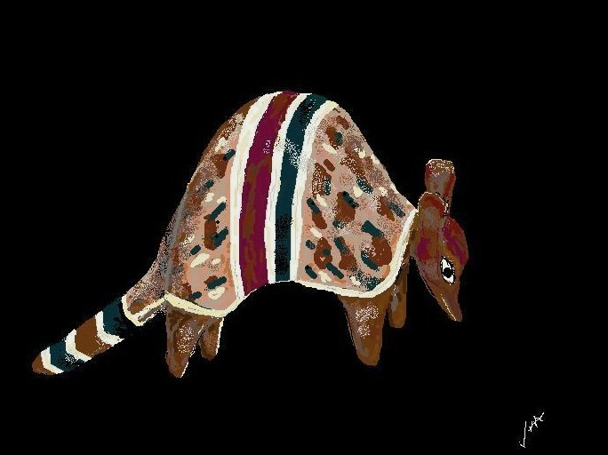

La cultura de los qom era funcional a sus costumbres y tradiciones: vivían en habitaciones de leños recubiertas de paja, habitáculos que solían medir unos dos metros de diámetro. Fabricaban objetos de cerámica, cestería y tejidos con finalidad principalmente utilitaria.
Durante los meses cálidos casi no usaban vestimenta a excepción de simples taparrabos. En los períodos frescos usaban ropas más complejas y en ocasión de sus celebraciones rituales se adornaban. De este modo poseían un vestido llamado poto, confeccionado con fibras de caraguatá (Aechmea distichantha), cuero y ―tras la invasión española―, algodón.
También durante los períodos fríos llegaban a abrigarse con ponchos. Los varones adultos adornaban sus cabezas con el opaga, especie de tocado realizado con plumas y cuerdas de caraguatá. Mujeres y varones se adornaban con onguaghachik, es decir, con pulseras, que originalmente se confeccionaban usando dientes y uñas de animales, semillas, plumas, valvas o conchas y cócleas o caracoles (al parecer para obtener algunos de estos elementos practicaban comercio de trueque con otras etnias). De confección semejante a estas pulseras eran los colaq o collares. En cuanto a los nallaghachik, estos eran adornos eminentemente festivos, muy coloridos, compuestos con plumas, flores y hojas.
